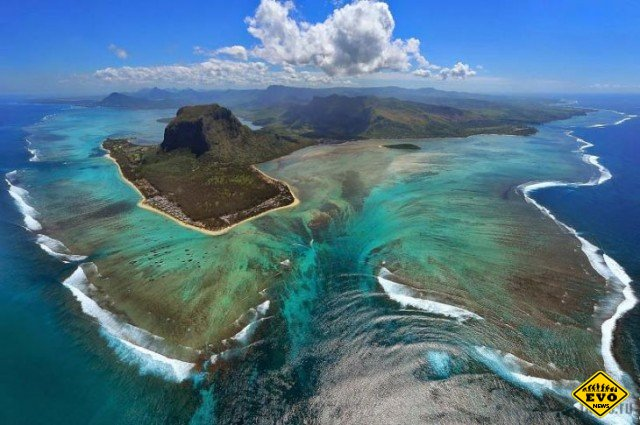

Тайны мирового океана и их особенности

Об особенностях водной стихии человечество знает очень мало, в процентном количестве изучено всего 3-5% океанских глубин.
Тайн в мировом океане бесчисленное множество. Их он открывает постепенно и неохотно. Но некоторыми все же согласился поделиться.
Эффект, напоминающий подводный водопад, можно наблюдать у берегов полуострова Ле-Морн-Брабан (государство Маврикий).
Там проходят мощные течения, создающие завихрения песка и ила, переносимые водой по неровному дну, усеянному кораллами.
Создается впечатление, что водные потоки каскадом стекают по дну, создавая подводный водопад. B Индийском океане мореплаватели
уже сотни лет замечали, что там в определенных местах вода имеет голубое сияние. Этот феномен завораживал всех моряков.
Только недавно, в 2005 году была разгадана тайна свечения. Эффект сияющего молока придают водам бактерии, обладающие биолюминесцентными свойствами.
Они «зажигаются» для приманивания морских обитателей.
В штате Орегон на океаническом побережье существует загадочная воронка, ее называют «вратами в подземный мир».
Во время приливов в падину заливается вода, и, достигнув дна, выплескивается на высоту 6 метров.
Как появился «колодец», ученые до сих пор не знают, никто еще не опускался в него.
Предположительно, что воронка связана с подводными океаническими пещерами. Иногда в сезон дождей,
прибрежные воды морей и океанов становятся красными. «Красный прилив» образуется в результате резкого массового размножения бурых водорослей.
Эта биомасса поглощает весь кислород, делая воду непригодной для жизни. Сюрреалистические ледяные цветы можно увидеть на Северном Ледовитом океане.
Они «распускаются», когда воздух над водой становится сухим и его температура ниже, чем водной поверхности.
Океанический луг цветов может возникнуть прямо на глазах, вырастив мгновенно цветы до 8-10 см в диаметре.
Бермудский треугольник расположен в Атлантическом океане. В Тихом же существует его аналог.
Место возле острова Миякедзима называют Драконьим треугольником, оно часто подвергается мощнейшим бурям и штормам,
возникающим буквально ниоткуда. В этом регионе не живут ни рыбы, ни птицы, а рыбаки стараются не подходить к нему,
существует много причин почему бермудский треугольник все боятся, но это уже другая тема. При встрече Балтийского
и Северного морей образуется четкая граница – Галоклин, как назвал это явление Жак Ив Кусто. Связана она с различными «структурами» их вод:
температуры, плотности, уровня солености. Такое явление можно наблюдать в Дании.
В некоторые океанических водах обитают змеи – ставшие подводными ими по стечению обстоятельств.
Раньше они были наземными существами. Потом по неизвестной причине перебрались в воду, и охотятся там на свои жертвы.
Дышать змеи могут, впитывая кислород из воды через кожу. Пробыв под водой несколько часов, они поднимаются на поверхность подышать.
Огромные страшной силы водовороты – явление, свойственное узким проливам, для которых характерны периоды приливов и отливов.
В пики этих процессов сталкиваются воды разного направления, воздавая воронки, которые могут быть местом крушения кораблей.
Дайверам иногда удается столкнуться с таким подводным существом как огнетелки, или по-научному, пиросомы.
Это скопление множества мелких существ, которые, соединяясь, могут достичь размеров кита.